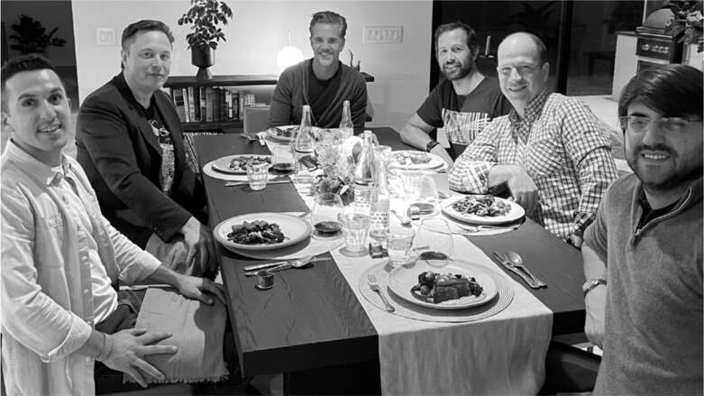
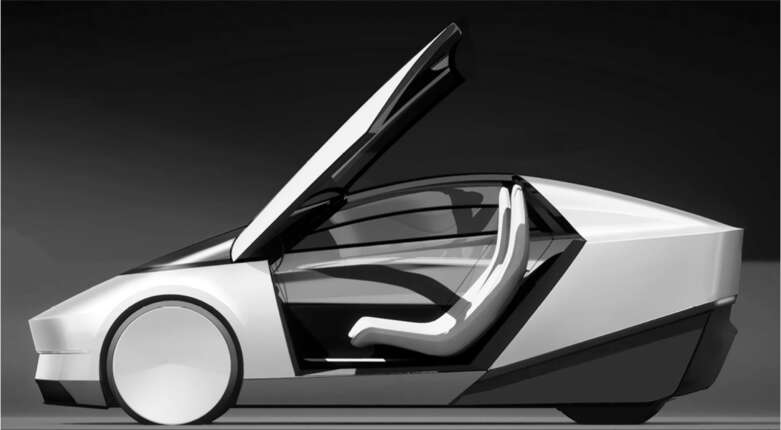

Chúng tôi dồn toàn lực cho xe tự hành
Xe tự lái, theo Musk, không chỉ đơn giản là giải phóng con người khỏi gánh nặng lái xe. Chúng phần lớn sẽ loại bỏ nhu cầu sở hữu xe hơi cá nhân. Tương lai sẽ thuộc về Robotaxi: một phương tiện không người lái sẽ xuất hiện khi bạn gọi, đưa bạn đến đích, rồi lại tiếp tục phục vụ hành khách tiếp theo. Một số có thể thuộc sở hữu cá nhân, nhưng phần lớn sẽ thuộc về các công ty vận tải hoặc chính Tesla.
Tháng 11 năm đó, Musk đã tập hợp năm cộng sự hàng đầu của mình tại Austin để cùng thảo luận về tương lai này trong một bữa tối thân mật tại căn nhà đang hoàn thiện của Omead Afshar, người đã thuê một đầu bếp riêng để nấu những miếng bít tết ribeye dày dặn. Có mặt Franz von Holzhausen, Drew Baglino, Lars Moravy và Zach Kirkhorn. Họ quyết định rằng Robotaxi sẽ là một chiếc xe nhỏ hơn, rẻ hơn và ít tốc độ hơn Model 3. "Trọng tâm chính của chúng ta phải là số lượng," Musk nói. "Chúng ta sản xuất bao nhiêu cũng không đủ. Một ngày nào đó, chúng ta muốn đạt mốc hai mươi triệu chiếc mỗi năm."
Một thách thức cốt lõi là làm thế nào để thiết kế một chiếc xe không có vô lăng hoặc bàn đạp mà vẫn đáp ứng các tiêu chuẩn an toàn của chính phủ và xử lý các tình huống đặc biệt. Tuần này qua tuần khác, Musk đều cân nhắc từng chi tiết. "Nếu ai đó quên đóng cửa Robotaxi khi xuống xe thì sao?" ông hỏi. "Chúng ta phải đảm bảo nó có thể tự đóng cửa." Làm thế nào để Robotaxi vào được khu dân cư có cổng hoặc bãi đậu xe? "Có lẽ nó cần một cánh tay để bấm nút hoặc lấy vé," ông nói. Nhưng điều đó nghe có vẻ như một cơn ác mộng. "Có lẽ chúng ta chỉ nên loại trừ những nơi mà xe không thể dễ dàng vào được," ông quyết định. Đôi khi các cuộc trò chuyện nghiêm túc và chi tiết đến mức che giấu đi sự táo bạo của toàn bộ ý tưởng.
Đến cuối mùa hè năm 2022, Musk và nhóm của ông nhận ra rằng họ phải đưa ra quyết định cuối cùng về vấn đề mà họ đã vật lộn suốt một năm. Họ nên chọn cách an toàn và lắp đặt vô lăng, bàn đạp, gương chiếu hậu bên và những thứ khác hiện đang được quy định yêu cầu? Hay họ nên chế tạo nó để thực sự tự động?
Hầu hết các kỹ sư của ông vẫn đang thúc đẩy phương án an toàn hơn. Họ có cái nhìn thực tế hơn về việc cần bao lâu để Hệ thống Lái xe Tự động Hoàn toàn (FSD) sẵn sàng. Trong một cuộc họp định mệnh và kịch tính vào ngày 18 tháng 8, họ đã tập hợp để thảo luận về vấn đề này.
"Chúng tôi muốn đảm bảo rằng chúng tôi đang đánh giá rủi ro cùng với ông," von Holzhausen nói với Musk. "Nếu chúng ta đi theo con đường không có vô lăng và FSD chưa sẵn sàng, chúng ta sẽ không thể đưa chúng ra đường." Ông đề xuất rằng họ nên chế tạo một chiếc xe có vô lăng và bàn đạp, có thể dễ dàng tháo rời. "Về cơ bản, đề xuất của chúng tôi là lắp đặt chúng ngay bây giờ nhưng sẽ tháo bỏ khi được phép."
Musk chỉ lắc đầu. Tương lai sẽ không đến đủ nhanh trừ khi họ thúc đẩy nó.
"Những cái nhỏ," von Holzhausen tiếp tục, "mà chúng ta có thể tháo ra khá dễ dàng và thiết kế xung quanh."
"Không," Musk nói. "Không. KHÔNG." Có một khoảng lặng dài. "Không gương, không bàn đạp, không vô lăng. Tôi sẽ chịu trách nhiệm cho quyết định này."
Các giám đốc điều hành ngồi quanh bàn do dự. "À, chúng tôi sẽ báo cáo lại với ông về việc đó," một người nói.
Musk trở nên lạnh lùng. "Để tôi nói rõ," ông nói chậm rãi. "Chiếc xe này phải được thiết kế như một Robotaxi hoàn chỉnh. Chúng ta sẽ chấp nhận rủi ro đó. Đó là lỗi của tôi nếu nó thất bại. Nhưng chúng ta sẽ không thiết kế một loại xe nửa vời. Chúng ta sẽ dồn toàn lực cho xe tự lái."
Vài tuần sau, ông vẫn rất hào hứng với quyết định của mình. Trên chuyến bay trở về sau khi đưa Griffin vào đại học, ông tham gia cuộc họp Robotaxi hàng tuần qua điện thoại. Như thường lệ, ông cố gắng truyền đạt cảm giác cấp bách. "Đây sẽ là một sản phẩm mang tính cách mạng lịch sử," ông nói. "Nó sẽ thay đổi mọi thứ. Đây là sản phẩm giúp Tesla trở thành công ty trị giá mười nghìn tỷ đô la. Người ta sẽ còn nhắc đến khoảnh khắc này trong một trăm năm nữa."
Chiếc xe 25.000 đô la
Như các cuộc thảo luận về Robotaxi đã cho thấy, Musk có thể cực kỳ cứng đầu. Ông có một ý chí kiên định đến mức bóp méo thực tế và sẵn sàng gạt bỏ những lời phản đối. Sự cứng rắn này có thể là một trong những siêu năng lực tạo nên thành công của ông, bên cạnh những thất bại của ông.
Nhưng đây là một đặc điểm ít được biết đến hơn: ông có thể thay đổi suy nghĩ. Ông có thể tiếp thu những lập luận mà dường như ông đang bác bỏ và điều chỉnh lại việc tính toán rủi ro của mình. Và đó là những gì đã xảy ra với vô lăng.
Vào cuối mùa hè năm 2022, sau khi Musk tuyên bố "tất tay" vào Robotaxi không có vô lăng, von Holzhausen và Moravy đã bắt đầu thuyết phục ông xem xét lại. Họ biết cách làm điều đó một cách không mang tính thách thức. "Chúng tôi đã mang đến cho ông ấy những thông tin mới mà có thể ông ấy chưa hoàn toàn nắm bắt được vào mùa hè," Moravy nói. Ngay cả khi xe tự lái được các cơ quan quản lý ở Mỹ phê duyệt, ông lập luận, thì cũng phải mất nhiều năm nữa chúng mới được phê duyệt trên toàn cầu. Vì vậy, việc chế tạo một phiên bản xe có vô lăng và bàn đạp là hợp lý.
Trong nhiều năm, họ đã thảo luận về những gì nên là sản phẩm thế hệ tiếp theo của Tesla: một chiếc xe nhỏ, giá rẻ, hướng đến thị trường đại chúng với giá bán khoảng 25.000 đô la. Bản thân Musk đã hé lộ khả năng này vào năm 2020, nhưng sau đó ông đã tạm dừng kế hoạch, và trong hai năm tiếp theo, ông liên tục phủ quyết ý tưởng này, nói rằng Robotaxi sẽ khiến chiếc xe kia trở nên không cần thiết. Tuy nhiên, von Holzhausen đã âm thầm duy trì nó như một dự án bí mật trong studio thiết kế của mình.
Vào một buổi tối thứ Tư muộn trong chuyến đi ra mắt Optimus vào tháng 9 năm 2022, Musk đã ở trong căn phòng quen thuộc của mình, phòng họp Jupiter không cửa sổ của nhà máy Fremont. Moravy và von Holzhausen đã dẫn đầu một vài thành viên chủ chốt của đội ngũ Tesla tham gia một cuộc họp bí mật. Họ trình bày dữ liệu cho thấy để Tesla tăng trưởng 50% mỗi năm, họ cần phải có một chiếc xe nhỏ giá rẻ. Thị trường toàn cầu cho một chiếc xe như vậy là rất lớn. Đến năm 2030, có thể có tới 700 triệu chiếc, gần gấp đôi so với loại Model 3/Y. Sau đó, họ chỉ ra rằng cùng một nền tảng xe và cùng một dây chuyền lắp ráp có thể được sử dụng để sản xuất cả xe 25.000 đô la và Robotaxi. "Chúng tôi đã thuyết phục ông ấy rằng nếu chúng tôi xây dựng những nhà máy này và chúng tôi có nền tảng này, chúng tôi có thể sản xuất cả Robotaxi và một chiếc xe 25.000 đô la, tất cả trên cùng một kiến trúc xe," von Holzhausen nói.
Sau cuộc họp, Musk và tôi ngồi một mình trong phòng họp, và rõ ràng là ông không mấy hào hứng với chiếc xe 25.000 đô la. "Nó thực sự không phải là một sản phẩm thú vị," ông nói. Tâm huyết của ông là thay đổi ngành giao thông vận tải thông qua Robotaxi. Nhưng trong vài tháng tiếp theo, ông ngày càng trở nên nhiệt tình hơn. Tại một buổi đánh giá thiết kế vào một buổi chiều tháng 2 năm 2023, von Holzhausen đã đặt các mô hình của Robotaxi và chiếc xe 25.000 đô la cạnh nhau trong studio. Cả hai đều mang hơi hướng tương lai của Cybertruck. Musk yêu thích các thiết kế. "Khi một trong số này xuất hiện ở góc phố," ông nói, "mọi người sẽ nghĩ rằng họ đang nhìn thấy thứ gì đó đến từ tương lai."
Mẫu xe đại chúng mới, cả phiên bản có vô lăng và Robotaxi, được biết đến là "nền tảng thế hệ tiếp theo". Ban đầu, Musk quyết định Tesla sẽ xây dựng một nhà máy mới ở miền bắc Mexico, cách Austin khoảng 650 km về phía nam, được thiết kế hoàn toàn mới để sản xuất những chiếc xe này. Nhà máy sẽ sử dụng một phương pháp sản xuất hoàn toàn mới, tự động hóa cao.
Tuy nhiên, một vấn đề nhanh chóng nảy sinh trong suy nghĩ của ông: Musk luôn tin rằng các kỹ sư thiết kế của Tesla cần phải ở ngay cạnh dây chuyền lắp ráp, thay vì cho phép sản xuất ở một địa điểm xa xôi. Bằng cách đó, các kỹ sư có thể nhận được phản hồi ngay lập tức về cách thiết kế những cải tiến vừa giúp cải thiện chiếc xe vừa giúp sản xuất dễ dàng hơn. Điều này đặc biệt đúng với một chiếc xe và quy trình sản xuất hoàn toàn mới. Nhưng ông nhận ra rằng sẽ khó có thể thuyết phục các kỹ sư hàng đầu của mình chuyển đến nhà máy mới. "Đội ngũ kỹ thuật của Tesla cần phải có mặt tại dây chuyền sản xuất để đạt được thành công, và việc thuyết phục mọi người chuyển đến Mexico sẽ không bao giờ xảy ra", ông nói với tôi.
Vì vậy, vào tháng 5 năm 2023, ông quyết định thay đổi địa điểm xây dựng ban đầu cho những chiếc xe thế hệ tiếp theo và Robotaxi thành Austin, nơi không gian làm việc của ông và các kỹ sư hàng đầu sẽ ngay cạnh dây chuyền lắp ráp siêu tự động tốc độ cao mới. Trong suốt mùa hè năm 2023, ông đã dành hàng giờ mỗi tuần để làm việc với nhóm của mình nhằm thiết kế từng trạm trên dây chuyền, tìm cách rút ngắn từng bước và quy trình xuống còn từng mili giây.

Omead Afshar, Musk, Franz von Holzhausen, Drew Baglino, Lars Moravy, và Zach Kirkhorn

Một mẫu Robotaxi